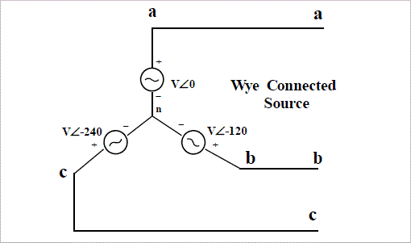
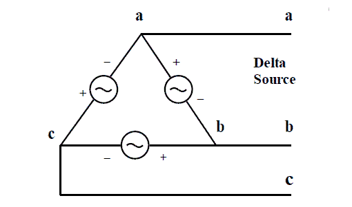

There are two types of system available in electric circuit, single phase and three phase system. In single phase circuit, there will be only one phase, i.e the electric current will flow through only one wire and there will be one return path called neutral line to complete the circuit. So in single phase minimum amount of power can be transported. Here the generating station and load station will also be single phase. This is an old system using from previous time.
In 1882, new invention has been done on polyphase system, that more than one phase can be used for generating, transmitting and for load system. Three phase circuit is the polyphase system where three phases are send together from the generator to the load. Each phase are having a phase difference of 120°, i.e 120° angle electrically. So from the total of 360°, three phases are equally divided into 120° each. The power in three phase system is continuous as all the three phases are involved in generating the total power. The sinusoidal waves for 3 phase system is shown below
The three phases can be used as single phase each. So if the load is single phase, then one phase can be taken from the three phase circuit and the neutral can be used as ground to complete the circuit.
Why Three Phase is preferred Over Single Phase?
There are various reasons for this question because there are numbers of advantages over single phase circuit. The three phase system can be used as three single phase line so it can act as three single phase system. The three phase generation and single phase generation is same in the generator except the arrangement of coil in the generator to get 120° phase difference. The conductor needed in three phase circuit is 75% that of conductor needed in single phase circuit. And also the instantaneous power in single phase system falls down to zero as in single phase we can see from the sinusoidal curve but in three phase system the net power from all the phases gives a continuous power to the load.
Till now we can say that there are three voltage source connected together to form a three phase circuit. And actually it is inside the generator. The generator is having three voltage source s which are acting together in 120° phase difference. If we can arrange three single phase circuit with 120° phase difference, then it will become a three phase circuit. So 120° phase difference is must otherwise the circuit will not work, the three phase load will not be able to get active and it may also cause damage to the system.
The size or metal quantity of three phase devices is not having much difference. Now if we consider the transformer, it will be almost same size for both single phase and three phase because transformer will make only the linkage of flux. So the three phase system will have higher efficiency compared to single phase because for the same or little difference in mass of transformer, three phase line will be out whereas in single phase it will be only one. And losses will be minimum in three phase circuit. So overall in conclusion the three phase system will have better and higher efficiency compared to the single phase system.
In three phase circuit, connections can be given in two types:
- Star connection
- Delta connection
Star Connection
In star connection, there is four wire, three wires are phase wire and fourth is neutral which is taken from the star point. Star connection is preferred for long distance power transmission because it is having the neutral point. In this we need to come to the concept of balanced and unbalanced electric current in power system.
When equal electric current will flow through all the three phases, then it is called as balanced current. And when the electric current will not be equal in any of the phase, then it is unbalanced current. In this case, during balanced condition there will be no electric current flowing through the neutral line and hence there is no use of the neutral terminal. But when there will be unbalanced electric current flowing in the three phase circuit, neutral is having a vital role. It will take the unbalanced electric current through to the ground and protect the transformer. Unbalanced electric current affects transformer and it may also cause damage to the transformer and for this star connection is preferred for long distance transmission.
The star connection is shown below-

In star connection, the line voltage is √3 times of phase voltage. Line voltage is the voltage between two phases in three phase circuit and phase voltage is the voltage between one phase to the neutral line. And the electric current is same for both line and phase. It is shown as expression below
Delta Connection
In delta connection, there is three wires alone and no neutral terminal is taken. Normally delta connection is preferred for short distance due to the problem of unbalanced electric current in the circuit. The figure is shown below for delta connection. In the load station, ground can be used as neutral path if required.

In delta connection, the line voltage is same with that of phase voltaage. And the line electric current is √3 times of phase current. It is shown as expression below,
In three phase circuit, star and delta connection can be arranged in four different ways-
- Star-Star connection
- Star-Delta connection
- Delta-Star connection
- Delta-Delta connection
But the power is independent of the circuit arrangement of the three phase system. The net power in the circuit will be same in both star and delta connection. The power in three phase circuit can be calculated from the equation below,
Since there is three phases, so the multiple of 3 is made in the normal power equation and the PF is power factor. Power factor is a very important factor in three phase system and some times due to certain error, it is corrected by using capacitors.
 by
by